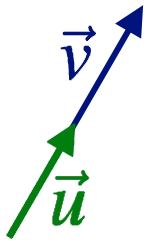
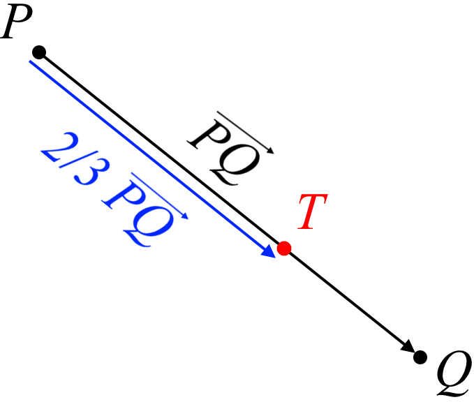

Length of a Vector#
Let \(P\) and \(Q\) be two points in \(\mathbb{R}^n\),
\(n=1\): For two points \(P\) and \(Q\), the distance= \(d(P,Q)=|P-Q|\)
\(n=2\): For two points \(P=(p_1,~p_2)\) and \(Q=(q_1,~q_2)\), distance= \(d(P,Q)=\sqrt{(p_1-q_1)^2+(p_2-q_2)^2}\)

\(n=3\): For two points \(P=(p_1,~p_2,~p_3)\) and \(Q=(q_1,~q_2,~q_3)\), distance= \(d(P,Q)=\sqrt{(p_1-q_1)^2+(p_2-q_2)^2+(p_3-q_3)^2}\)
{kind=link}
For any two points \(P = (p_1,\ldots,p_n)\) and \(Q=(q_1,\ldots,q_n)\) in \(\mathbb{R}^n\), the distance between these points is defined as follows
This is known as the distance formula, and it can be also written as \(|P-Q|\) which also represents the distance between \(P\) and \(Q\).
Example: Find the distance between the points \(P\) and \(Q\) in \(\mathbb{R}^6\) , where \(P\) and \(Q\) are given by \(P =\left(1, 2 , 1 , 3 , 3 , 4 \right)\) and \(Q=\left( 0 , 1 , 0 , 1 , 0 , 1 \right)\).
Solution:
For two points \(P\) and \(Q\) from \(\mathbb{R}^n\),
\(d(P,Q) = d(Q,P)\),
\(d(P,Q) \geq 0\),
If \(d(P,Q)=0\), then \(P = Q\),
where \(d(P,Q)\) denote the distance between these two points
The length of \(\vec{u} = \left[u_1,\ldots,u_n\right]^T\) is given by
where \(\|\vec{u}\|\) shows the length of \(\vec{u}\).
For two points \(P = (p_1,\ldots,p_n)\) and \(Q=(q_1,\ldots,q_n)\) in \(\mathbb{R}^n\), the length of \(\overrightarrow{PQ}\) can be regarded as the distance between \(\vec{P}\) and \(\vec{Q}\). Thus,
Assume that \(\vec{u}=\begin{bmatrix}u_1 & u_2 & \dots & u_n\end{bmatrix}^T\) is a vector in \(\mathbb{R}^n\), and \(k\in \mathbb{R}\) is a scalar. Then,
where \(|k|\) shows the absolute value of \(k\).
Example: Let \(\vec{u}=\begin{bmatrix}1 & 2 & 2\end{bmatrix}^T\). Then the length of \(4\vec{u}=\begin{bmatrix}4 & 8 & 8\end{bmatrix}^T\) can be evaluated using
Unit Vector:A vector \(\vec{u} \in \mathbb{R}^n\) is called if it’s length is equal to 1 (i.e. \(\|\vec{u}\|=1\)).
If \(\|\vec{v}\|\neq0\), we can normalize a vector \(\vec{v} \in \mathbb{R}^n\) by
Observe that the vector \(\vec{u}\) is aligned with \(\vec{v}\) (has the same direction), but its length is 1.
{kind=link}
Example: Let \(\vec{v}\) be given by \(\vec{v} =\begin{bmatrix} 1 & 2 & 2\end{bmatrix}^{T}\). Find the unit vector \(\vec{u}\) which has the same direction as \(\vec{v}\).
Solution: We have
Hence,
We always can verify that \(\|\vec{u}\|=1\).
Example: Find the point \(T\) which is \(\dfrac{2}{3}\) of the way from \(P=(3,-1,2)\) to \(Q=(9,-7,-10)\).
Solution: First, let’s calculate the lenght of \(\overrightarrow{PQ}\),
{kind=link}
Moreover, \(T\) is \(2/3\) of way from \(P\) to \(Q\). Therefore,
However, we need to find \(T\). We know that
{kind=link}
Refrences
Kuttler, Kenneth. “A First Course in Linear Algebra (Lyryx).” (2018).
Nicholson, W. Keith. “Linear Algebra with Applications (Lyryx).” (2018).